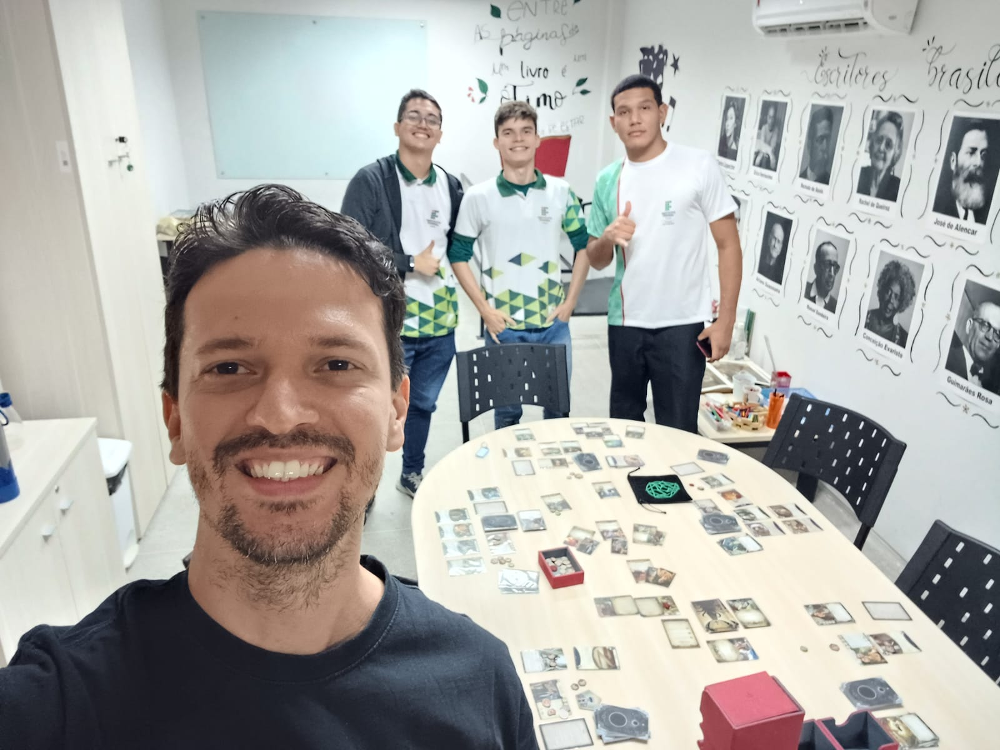

Formação
Prof. Helton possui uma graduação em Letras - Português e Inglês na UFC e também um mestrado em Estudos da Tradução, também na UFC. Com 18 anos de experiencia na area.
Desde o ensino médio, ele sempre teve muito contato com estrangeiros. Teve a oportunidade de acompanhar o surgimento dos bate-papos virtuais, como as salas do UOL, o ICQ e o MSN Messenger.
Atualmente, trabalha como professor de inglês no IFCE Maranguape.
